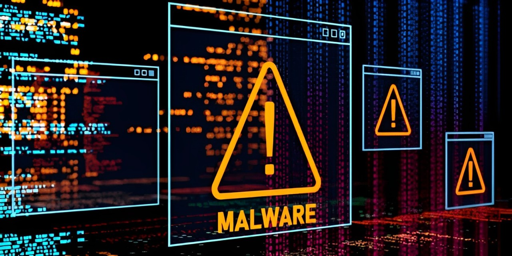
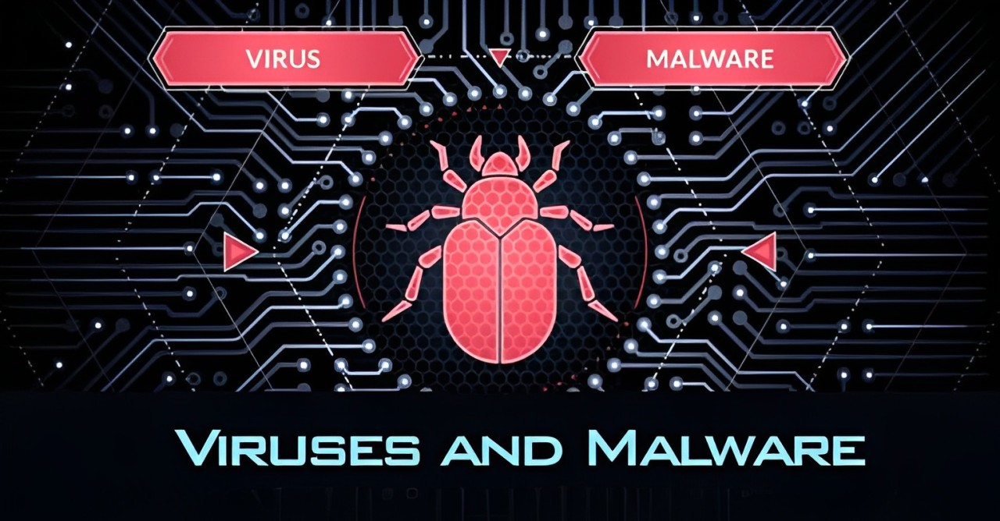

Understanding Malware, Viruses, Spam, and Antivirus
What is Malware?
Malware (short for "malicious software") is an umbrella term for any software designed to harm, exploit, or otherwise compromise computer systems or networks.
What is a Virus?
A computer virus is a specific type of malware programmed to replicate itself and spread to other systems. Viruses typically attach themselves to legitimate files or programs, allowing them to execute malicious actions, such as corrupting files, slowing down the system, or even causing total system failure.
Viruses can spread through various mediums, including file downloads, email attachments, or infected USB drives. They often exploit security vulnerabilities in operating systems or applications to propagate further.
What is the Difference Between a Virus and Malware?
Malware is the overarching category of harmful software, whereas a virus is a specific subtype of malware. While people commonly refer to all malicious software as "viruses," this is inaccurate. Malware comes in various forms, including:
- Viruses: Attach to files or programs and replicate to spread to other systems.
- Worms: Self-replicating malware that spreads across networks without needing to attach to files or software.
- Trojan Horses: Programs disguised as legitimate software that give attackers unauthorized access to systems.
- Logic Bombs: Malicious code triggered by specific events, like a particular date or action.
- Ransomware: Encrypts user data and demands payment (ransom) for decryption.
The primary difference lies in behavior: Viruses need a host file or program to activate and spread; Worms spread independently; Trojan horses deceive users to gain access rather than replicating like viruses.
What is Spam?
Spam refers to unsolicited and often irrelevant messages, typically sent in bulk via email or messaging platforms. While not inherently malware, spam is frequently used as a delivery mechanism for malicious software. Examples include:
- Phishing emails that trick users into revealing sensitive information like passwords or credit card details.
- Emails with malicious attachments or links that lead to malware downloads.
How Do Antivirus Programs Work?

Antivirus software detects, prevents, and removes malware. It functions by:
- Scanning Files: Compares file contents to a database of known malware signatures.
- Behavioral Analysis: Monitors programs for suspicious activity, such as unauthorized data encryption or network communication.
- Real-Time Protection: Actively blocks threats as they attempt to enter the system.
Modern antivirus solutions often include additional features, such as:
- Firewalls to prevent unauthorized network access.
- Anti-spam filters to block malicious emails.
- Heuristic Analysis to identify new, previously unknown threats.
Why Protect Against Malware?
Malware can cause significant harm, ranging from data loss to financial theft and system crashes. Ransomware, for example, can make critical files inaccessible, often crippling businesses and individuals. Investing in robust antivirus software, keeping operating systems updated, and practicing safe online behavior are essential to minimizing risks. By understanding malware, viruses, and spam, users can take proactive measures to safeguard their systems and data.